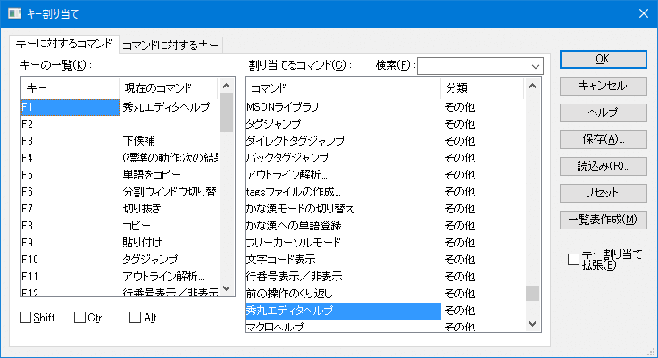

- 秀丸エディタの各種設定を、他のパソコンでも同じように設定したいのですが、ファイルに保存されるので移行や複製が可能な項目と、レジストリに保存されるので同じ設定にしたくても１から設定しないといけない項目を教えてください。

ファイルとして保存できる項目は、
- キー割り当てとマクロの登録内容
- 強調表示
- 上記を含む、全ての設定内容
が、あります。
キー割り当てとマクロ登録の保存
「その他」→「キー割り当て」の 「保存」 ボタンで行います。ファイルは「設定ファイル用フォルダ」に保存されます。 (未設定の場合は、秀丸エディタをインストールしたフォルダ)
秀丸エディタ Ver.8.90以降の場合 (Ver.8.90〜)

秀丸エディタ Ver.8.90より前の場合 (〜Ver.8.89)


なお保存時の「マクロ登録の内容も補完しますか?」のメッセージ対し[はい] を選択すれば、マクロの登録内容も保存することが出来ます。
注意 保存されるのは、登録内容だけです。マクロファイルは、別途バックアップする必要があります。強調表示
「その他」→「ファイルタイプ別の設定」の「デザイン」から、「保存/読込」 ボタンで行います。ファイルは「設定ファイル用フォルダ」に保存されます。 (未設定の場合は、秀丸エディタをインストールしたフォルダ)

秀丸エディタ本体の機能拡張にあわせ、強調表示ファイルには、現在は以下の定義(設定)を保存/読込することが出来ます。
- カラー設定
- 強調表示一覧
- 複数行の定義
- ツリー定義
- #ifdef等の詳細
上記を含めたほぼ全ての設定
秀丸エディタ本体メニューより、設定の保存/復元をおこないます。「その他」−「設定内容の保存/復元」
- 注意
レジストリの復元は、レジストリファイルのダブルクリックでも可能ですが、秀丸エディタを終了させた状態で、実行して下さい。 (なるべく、「設定内容の保存/復元」から行いましょう)
なお送金したかどうかは保存されませんので、暗証番号は、別途紙に書き留めるなどして保存しておいてください。また各々の拡張子「key」「hilight」「hmereg」は、付いていなければ自動的に付加されます。
参考資料(外部リンク)
- 秀丸エディタ ヘルプファイルサイト
- 秀丸エディタ開発元の秀まるおのホームページ(サイトー企画)にある引っ越し手順
- 注意
- [補足]
秀丸エディタ本体で、保存できるのは設定だけです。マクロを実際に動かすには、マクロファイル自体が必要です。その為、「キー割り当てとマクロ登録」の設定と共にマクロファイルも保存し、移行させる必要があります。
使用状態にもよりますが、マクロファイルだけではなく、以下のファイルも保存/移行させる必要があります
- 標準添付以外に追加した変換モジュール
- 標準添付以外に追加した強調表示ファイル(レジストリファイルに含まれる場合もあります)
- 単語補完用ファイル
- マクロで使用する外部DLL等
また、秀丸パブリッシャーを使用していて、テンプレートを編集/作成していた場合は、テンプレートファイルも移行対象になります。テンプレートの保存場所に関しては、秀丸パブリッシャーについて-テンプレートの注意点を参照してください。